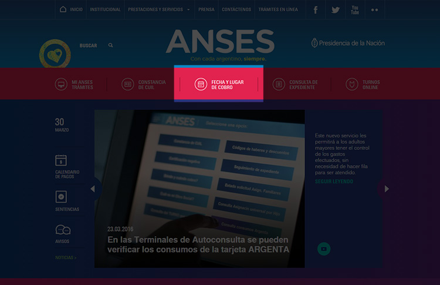
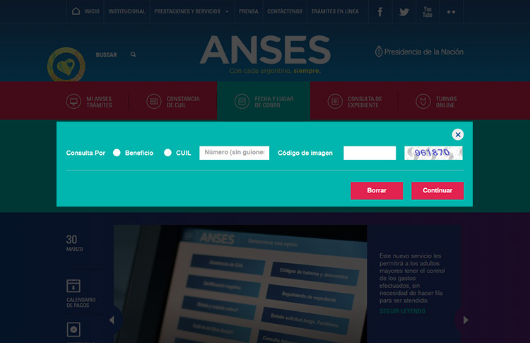

Donde cobro en ANSES
Si sos jubilado o pensionado, beneficiarlo del Programa PROGRESAR, de una pensión no contributiva, de una AUH, una asignación por embarazo, de un subsidio por desempleo o cualquier otro beneficio de ANSES, podés consultar lugar y período del próximo cobro.
100% digital
Gratuito
Seguí los pasos para ver lugar y fecha de cobro:
- Entrá en la página de ANSES
- Elegí la opción FECHA Y LUGAR DE COBRO

- Completá el formulario con tu número de Beneficio o de CUIL(Recordá colocar el código de imagen que aparece en la pantalla)
